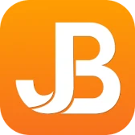

Software Engineering Intern
Jumbula
- Designed interactive Tableau dashboards and business intelligence visualizations.
- Integrated MongoDB and Salesforce data sources to improve reporting and analytics.
- Built automated reporting workflows and business intelligence solutions.
- Collaborated with backend engineers to optimize dashboard performance and data pipelines.